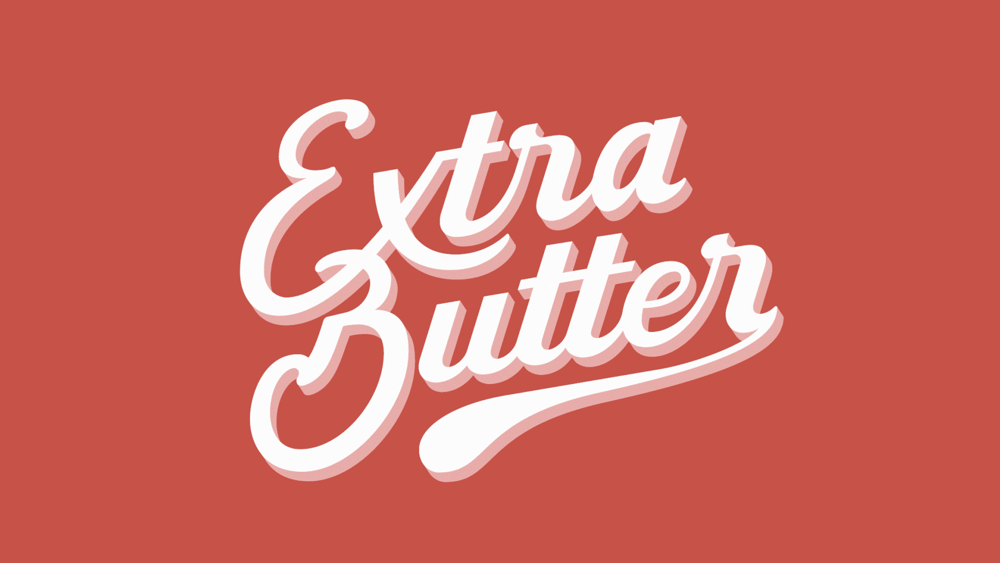

Extra Butter
Logo creation
A bit of extra butter on top
The idea to Extra Butter came up in the process of a fun screen printing workshop, when the
Swipe Studio Logo
was printed on all kind of fabrics. For a similar event, the plan was to create another visually appealing and bold lettering – which finally led to the creation of the Extra Butter logo mark.
From initial lettering as a pencil-sketch to refined vector artwork, it evolved to its final, playful look. It was later on used for screen-printing and now embellishes diverse clothes and fabrics from shirts to shopping bags.
 First rough sketches to determine the basic arrangement of letters
First rough sketches to determine the basic arrangement of letters
First things first – sketching out ideas!
To get ideas on paper and find first directions to explore further, I always start with small scale sketches. Sketching by hand allows to quickly test out possible arrangements, to take notes and iterate. Nothing has to be perfect in this stage, it’s just about exploring, getting to know the letters and find possible combinations.
 Drawing the letters with brush pens (left) and round nibs (right) to explore letterforms and to test out possible details
Drawing the letters with brush pens (left) and round nibs (right) to explore letterforms and to test out possible details
When feeling confident with my ideas and after having chosen a vague direction, I like to explore further on paper with different kinds of pens. Different tools have their own look and feel, and the emerging characteristics from this step can help to narrow down details like stroke widths, contrasts and spacing - even at an early stage with rough sketches. In this case, a contrast in stroke width seemed to be a promising approach.
 First digital sketches to figure out contrasts in the letters and to refine the arrangement
First digital sketches to figure out contrasts in the letters and to refine the arrangement
The next step is to refine the sketches, determine shapes, to figure out how letters intertwine into each other. In this case, I chose to work digitally with a graphic tablet. The arrangement of letters gets tighter, details get clearer and clearer, and the forms start to grow together to form a unit. A grid in the Background helps with spacing. This is one of the most crucial steps to get the design just right.
 Stages of the vectorization show the adjustments made in certain areas
Stages of the vectorization show the adjustments made in certain areas
When the sketches are ready, the letterforms are rebuilt as vectors. In this stage, the arrangement and letterforms are set, but smaller adjustments can still be made in the process. Notice how the bowel of the B was changed to be more open and the horizontal lines of the T were made thinner to match the contrast of the other letters.
 The refined lettering in vector view
The refined lettering in vector view
The logo mark is now vectorized in its final form and basically ready to print. To make it even more interesting, I added a 3D-effect to it to give the illusion of dimension. Now, the logo mark can be used for all kinds of purposes.
 Animated GIF of the lettering
Animated GIF of the lettering
For the use in digital applications, the graphic could also be animated to create an interesting effect and add attention to it.
Thanks for reading! 😊